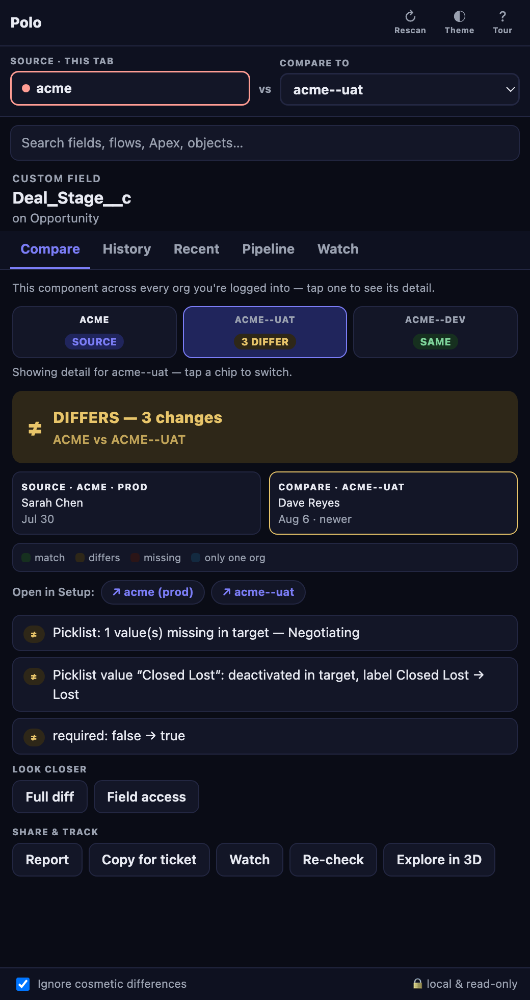
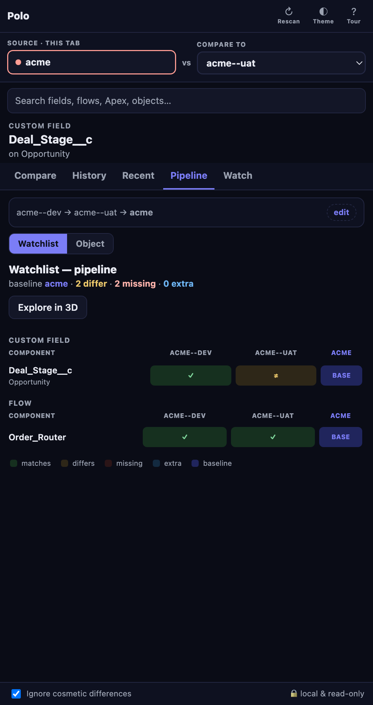
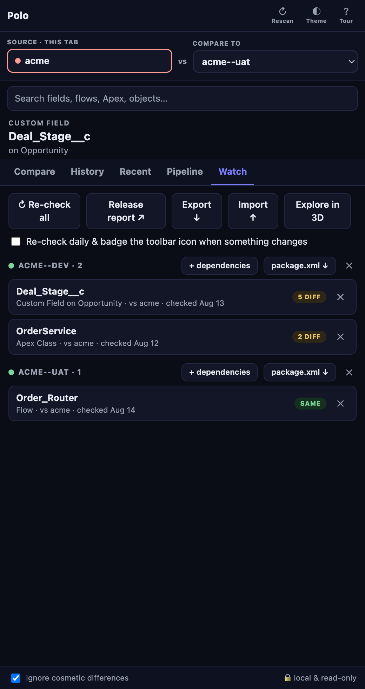
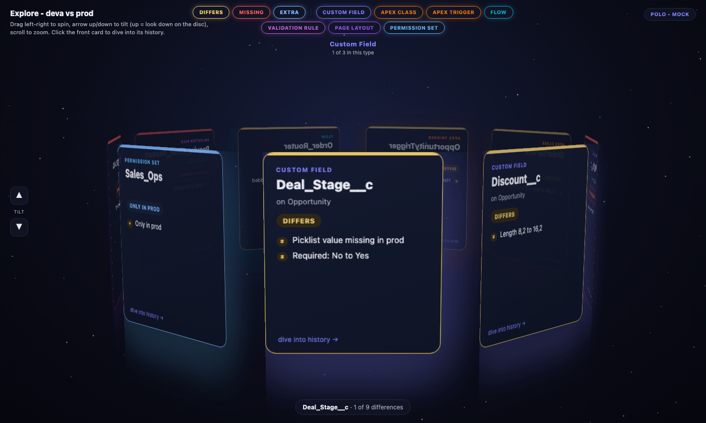
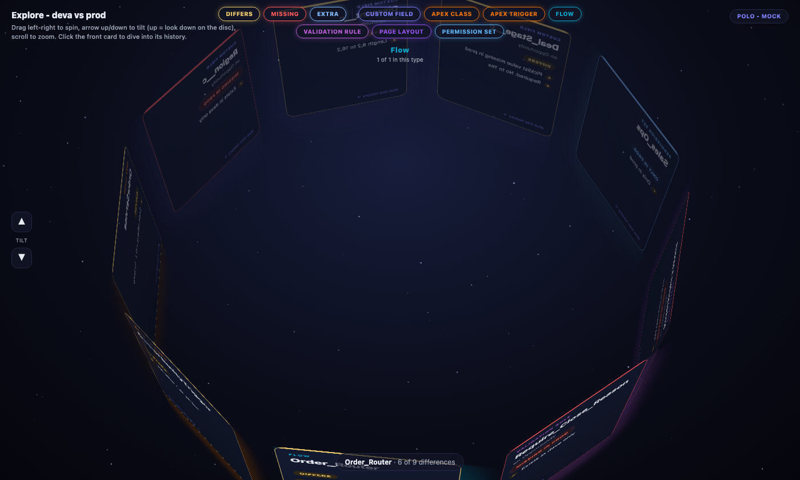

A Chrome side panel that lives next to Setup. Click a component and Polo tells you whether it's identical, different, or missing in every other org you're logged into — then shows you who changed it, and when. No login, no connected app: if you're signed into the org in Chrome, Polo can see it. Read-only, and your metadata never leaves your browser.

Three tabs do the everyday work. Open Polo next to Setup and it follows whatever you click — no copy-pasting API names, no second window.
Focus a field, flow, class, rule, layout, or page and Polo compares it against every org you're logged into. One chip per org; tap it for the detail. Every change reads as a plain sentence — “required: false → true”, “picklist value missing in target — Negotiating” — with a full diff one click away. The History tab merges audit trail, flow versions, and Polo's own snapshots into a who-changed-what timeline for both orgs.

Dev → UAT → Prod (or whatever your path is): components down, orgs across, each cell same / differs / missing / extra against a baseline you choose. Feed it your watchlist for a release check, or point it at an object for a full inventory sweep — fields, rules, layouts, triggers, actions. Click a cell to land in Compare with that org selected.

Watch anything from Compare. Grouped by source org with a verdict badge per row. + dependencies pulls in everything a component needs (recursively). Re-check all refreshes verdicts; turn on the daily re-check and Polo badges its toolbar icon when something drifts. Export a package.xml per org, a print-ready release report, or the whole list as JSON.
Polo won't deploy for you — that's the point — but it hands you everything the person who does will need.
Every watchlist group has a package.xml ↓ button. Polo writes a
Metadata API manifest for exactly those components — fields as
Object.Field__c, layouts as Object-Layout, Apex and
flows bare — and shows you the retrieve command to run:
sf project retrieve start -x acme-package.xml -o acme
Types the Metadata API can't round-trip cleanly get a note instead of a silent gap. Retrieve from source, deploy to target, with your normal tooling and your normal approvals.
Export ↓ saves the whole watchlist — every component, its source and
target org, and the last verdict — as polo-watchlist.json.
Import ↑ restores it on another machine, or hands it to a teammate:
same list, same org pairing, verdict badges intact, no re-check needed.
Imports merge, they don't overwrite.
Use it as the release manifest for a sprint, a shared checklist between admin and dev, or just insurance against a fresh browser profile.
Release report ↗ turns the watchlist into a print-ready go/no-go table, action-needed rows first. On any single compare, Report opens a paper-style page of the diff and history, and Copy for ticket puts a Markdown summary on your clipboard for Jira, Slack, or the PR description.
Polo rides on the Salesforce sessions you already have in Chrome. That turns out to matter more than it sounds.
No connected app, no OAuth dance, no package, no API user to provision. Log into Salesforce in Chrome the way you already do — every org you're signed into shows up in Polo's org picker.
Polo matches components by API name, never by ID, so the two orgs don't need to be related at all. Two customers on different stacks, an old org and the one replacing it, a client's prod against your reference org — if you can log into both, you can compare them.
Polo only ever reads. Metadata is fetched from your browser straight to your orgs and stays there — no servers, no accounts, no telemetry.
Polo is for admins, architects, and release managers who are tired of opening two Setup tabs side by side and squinting.
Focus a field, flow, class, rule, layout, or page in Setup. Polo compares it against every org you're logged into and shows a verdict chip per org — tap one for the exact differences, in sentences, not raw XML.
Setup Audit Trail, flow versions, and Polo's own snapshots merged into one history per org. It's deployment-aware: prod changing after sandbox is normal; prod changing on its own is a red banner.
Components × orgs versus a baseline: same, differs, missing, extra. Watchlist scope for your release, or object scope for a full inventory sweep.
Pin what's in flight. One-click dependency scan pulls in everything it needs. Daily re-check with a badge when something drifts. Export a package.xml or a print-ready release report.
Scan a whole object across orgs. Diff one field's read/edit across every profile and permission set. Compare a permission set's CRUD grid. Flow version-to-version diff, even inside one org.
Every difference on a spinnable disc grouped by type. Click the front card and it becomes the top of a history deck — scroll into the past until you hit the version that matches your target org.
When the list gets long, spin it. Every difference on one disc, grouped by type.


Text first, 3D second: names and verdicts are always readable, the space is just how you move through them.
package.xml and a ready-to-run
sf command — you run the retrieve or deploy. Polo's own network
layer is hard-wired to GET.Chrome Web Store listing is on the way. Want in early, or a heads-up when it lands? A short email is enough — how many orgs, what your release process looks like, and what you'd want to see side by side first.
chris@creedysolutions.com